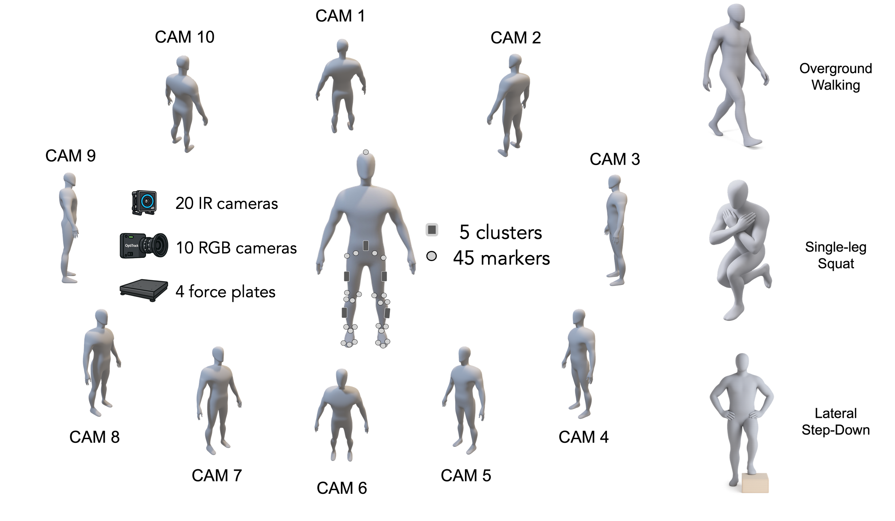
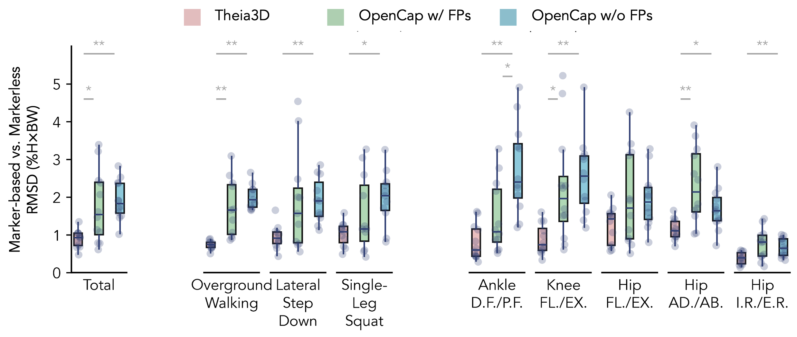
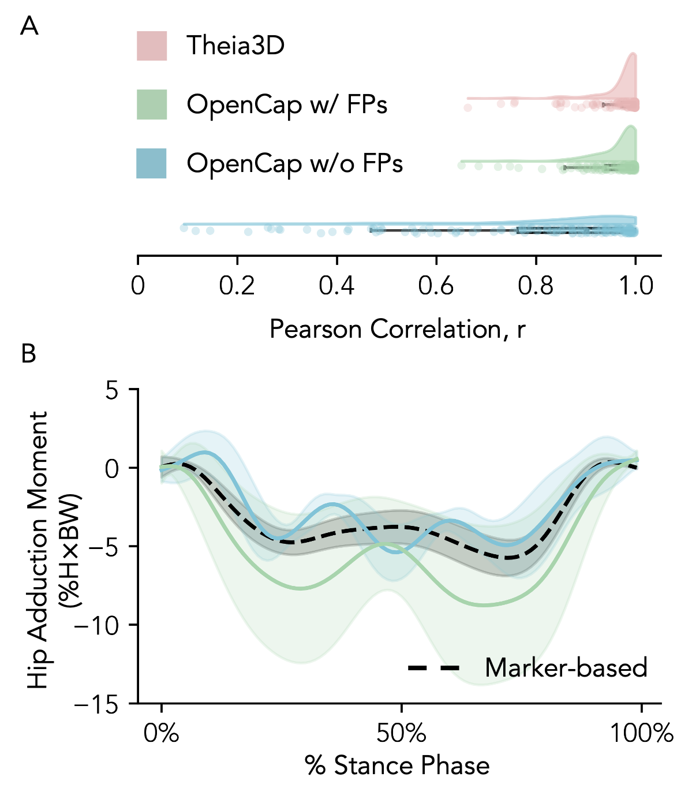
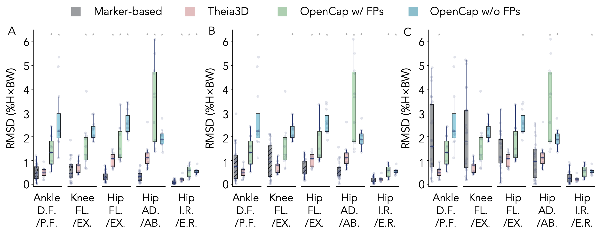

Does Markerless Motion Tracking Hold Up Under Load?
Evaluating multi‑view methods for lower‑extremity joint‑moment estimation
We jointly captured multi‑view RGB, a marker‑based system, and ground‑reaction forces to compare joint‑moment estimation across commercial and open‑source pipelines under identical conditions. Tasks ranged from overground walking to single‑leg squat and lateral step‑down.

How we compared methods
We benchmarked three computer‑vision‑based kinetics pipelines: Theia3D, OpenCap with force plates, and OpenCap without force plates (muscle‑driven dynamic optimization). Errors were computed relative to the synchronized marker‑based analysis.
Overall accuracy favors force‑augmented pipelines

Does RMSD capture everything?
Despite magnitude differences, the timing and shape of moment curves were highly correlated—particularly for Theia3D—which is crucial for phase‑dependent analyses. OpenCap with force plates showed slightly better temporal consistency than without. RMSD alone can miss these temporal nuances.

Context: comparing to an imperfect reference
Marker‑based motion capture has its own uncertainty. A 1 cm marker registration error can induce sizeable joint‑angle and moment deviations; simulated marker placement offsets during running also produce multi‑degree variability. Interpreting markerless errors through this lens can be more informative than absolute RMSD alone.

Takeaway: Multi‑view markerless methods can be viable for ankle and knee joint moments, while hip moments remain challenging. For small expected effects (e.g., ~1.2% H×BW hip‑moment changes from assistance devices), sensitivity may be insufficient today.